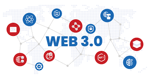

Web 3.0 is the decentralized, blockchain-based next generation of the internet that aims to shift ownership and control away from central corporations back to individual users. Unlike Web 2.0 where your data is owned by platforms like Google or Facebook, Web 3.0 uses blockchain technology to give users direct ownership of their data, digital assets, and online identity.
Key technologies of Web 3.0 include blockchain, cryptocurrencies, NFTs (Non-Fungible Tokens), and smart contracts. Web 3.0 also involves the Semantic Web, where machines can understand and interpret content more intelligently, and AI that personalizes experiences without centralized data collection.
💡 Did you know? The term "Web3" was coined by
Gavin Wood, co-founder of Ethereum, in 2014
— though it only became mainstream around 2021.